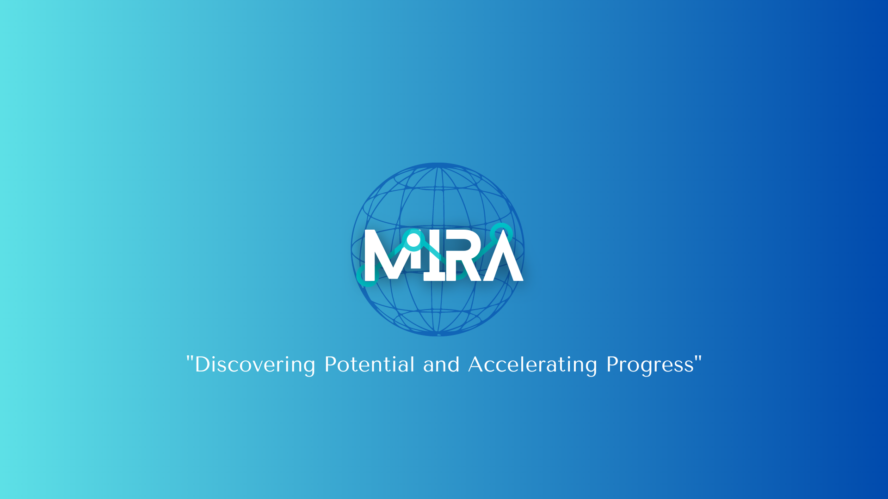
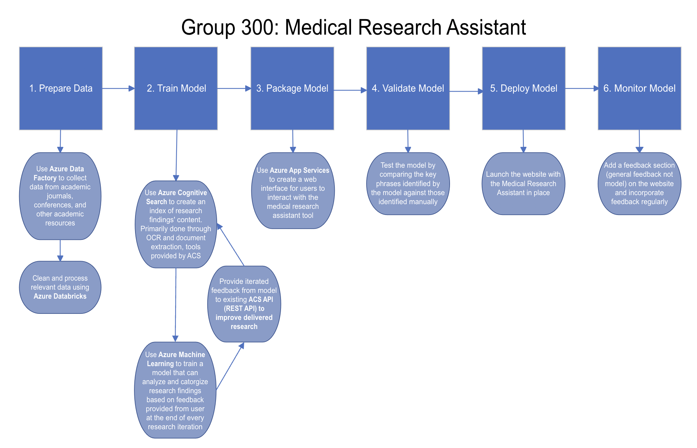

Microsoft / We Accelerate
MIRA AI Medical Research Assistant
An AI solution designed to simplify the medical research process using Microsoft Azure and machine learning tools.

Microsoft / We Accelerate
Jun 2023 to Aug 2023
Solution Team Member
Team Management · Microsoft Azure
About MIRA
MIRA is an AI medical research assistant that aims to accelerate and simplify the medical research process. It can process large datasets, determine relevant resources for a user’s research topic, and help researchers quickly access valuable information.
With a tool like MIRA, users can navigate through a large amount of information with more ease and confidence, empowering them to make meaningful advancements in their research.
My Role
During my time with Microsoft / We Accelerate, I was actively involved in different parts of the project development process, with a focus on solution design and the model pipeline.
Solution Design
The solution takes the form of a chatbot that can quickly output desired answers. Outputs are summarized and organized by relevance, helping users access the information they need faster.
Precision of Data
The AI model was designed around a dedicated database that includes necessary research data and can be consistently updated, reducing the risk of missing vital information.
Model Pipeline
After finalizing the solution, I used a pipeline wireframe to determine the resources needed to create the AI model and communicate the operational process of the solution.

My Experience
I learned a lot about machine learning and the application of Microsoft Azure tools through this experience. My mentor, Moataz Kamel, assisted significantly with creating the pipeline wireframe and making real-world connections to Azure tool usage.